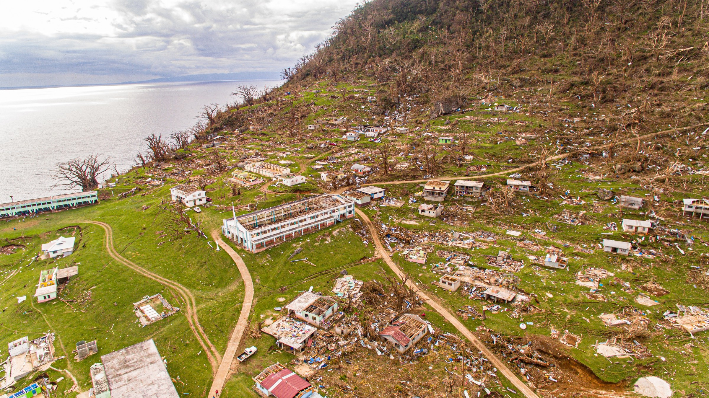

Covid-19 Shutdowns Slow Response to Tropical Cyclone Harold in Pacific Islands
The shutdown of economies and the severing of transportation links due to the global coronavirus pandemic are complicating disaster response.
Sanaka Samarasinha is the UN resident coordinator for the Pacific islands.He is deeply involved in the emergency response to Tropical Cyclone Harold, which battered four Pacific island countries — Fiji, Solomon Islands, Tonga, and Vanuatu — in early April.Worst hit was Sanma, the second-most populous province in Vanuatu, where some 90 percent of homes were destroyed.
The remote locations of the Pacific island nations are an obstacle even in calm times, Samarasinha said.Coronavirus closures are an additional logistical complexity.
'The fact that borders have been closed in many places and flights have stopped makes the issue of remoteness even more challenging,' Samarasinha said in a UN News interview.We are finding it difficult to move — whether we’re talking about personal protection equipment or other types of medical supplies or specialists and experts we need in order to respond to this.The movement of people and cargo is very difficult at the moment.'
Samarasinha added that the response works best when governments, international organizations, and aid agencies collaborate.
'This crisis can only be dealt with when we work together,' he said.
Posted On: 2020-04-22T00:00:00
Posted By: Circle Blue

Content Date: 2020-04-22
Download Date: 2021-05-13
Document ID: L0C04BYJI